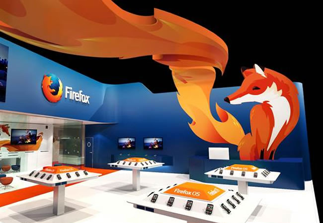

Noticia publicada el 21 de Fecbrero del 2015
Uno de los pioneros que utilizan estas tecnologías es Trendy Entertainment, que está potenciando Emscripten y asm.js para traer su popular título Dungeon Defenders a la web. Trendy ha anunciado hoy que lanzará una versión de Dungeon Defenders Eternity con los mismos efectos visuales y jugabilidad que la versión de escritorio original, disponible en Internet a velocidades cercanas a las nativas. El juego completo estará disponible para su compra hoy mismo en Steam.
Esto se basa en el impulso de la GDC a principios de este año, donde varios de los grandes nombres de la industria del juego anunciaron que traían sus innovadoras herramientas web a la Web, incluyendo Unity, con su complemento WebGL.
@gastonnina